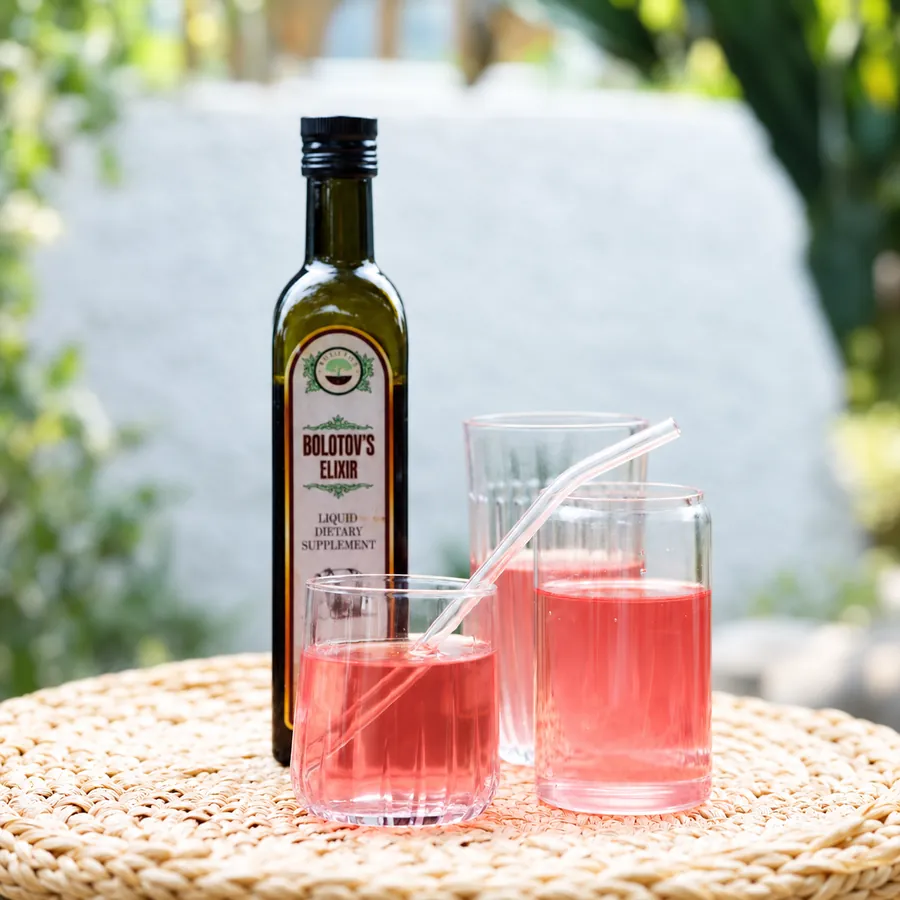
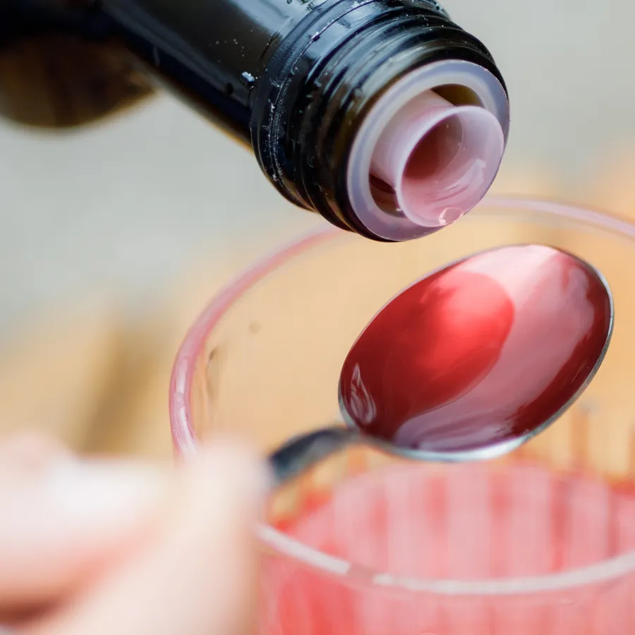
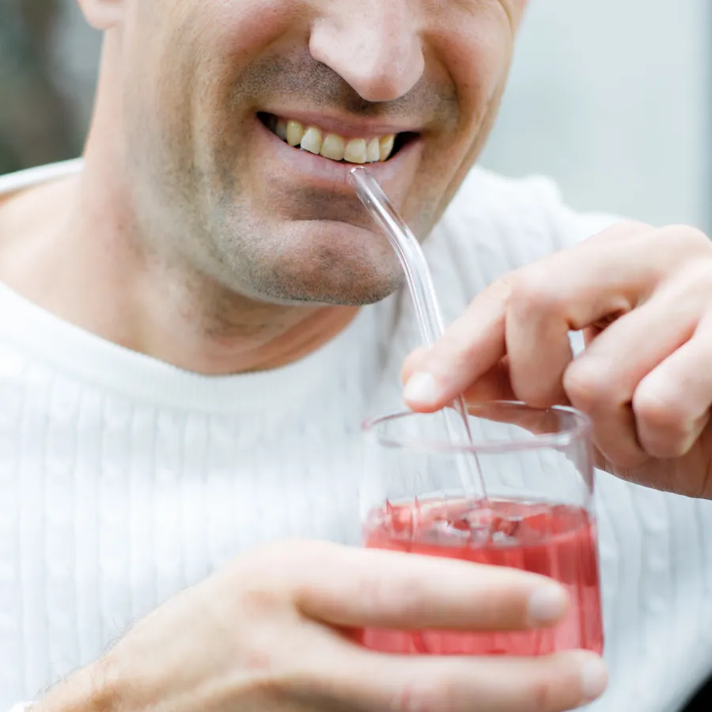

| 1–2 szt. | 193 zł / szt. |
| 3–5 szt. | 163 zł / szt. |
| od 6 szt. | 153 zł / szt. |
Codzienny komfort trawienny.
Balzam Bolotova to suplement diety o unikalnym składzie, opracowany na podstawie receptury akademika Borisa Bołotowa. Wspiera komfort trawienny jako element codziennej, zrównoważonej diety — dla osób, które chcą uzupełnić codzienną dietę o produkt jakości spożywczej i czują ciężkość po posiłkach.
Opinie klientów o Balzamie Bolotova
„Dzień dobry, balzam stosuję już od dłuższego czasu, mam już 3. butelkę i super”
„Dzień dobry! Dziękuję za świetny, bardzo dobrze wykonany produkt. Doskonale nadaje się do spożycia i włączania do codziennej diety. Na początku listopada złożę kolejne zamówienie i będę kontynuować stosowanie. Gratuluję – to naprawdę super produkt. Dziękuję, że jesteście. Pozdrawiam serdecznie, Valéria”
„Bardzo dziękuję za ofertę, ale balzam wciąż jeszcze mam. Kiedy będzie mi się kończył, kupię znowu. Jest wspaniały.👍”
Za 193 zł dostajesz 100 porcji oryginalnego Balzamu Bolotova: z dokumentami partii, legalnie sprowadzonego do UE i dostarczonego bez ryzyka.
| 3 porcje dziennie | 5,79 zł |
| 3–5 butelek (163 zł/szt.) | od 3,26 zł |
| od 6 butelek (153 zł/szt.) | od 3,06 zł |
Zanim kupisz taniej, sprawdź dwie rzeczy: kto jest producentem i czy sprzedawca pokaże dokumenty partii. My pokazujemy wszystkie — zobacz dokumenty →
Wyliczenie: 500 ml : 5 ml = 100 porcji; 2 porcje dziennie → 50 dni; 193 zł : 50 dni = 3,86 zł. Sposób użycia: 1 łyżeczka (5 ml) na 200 ml wody, 2–3 razy dziennie. Nie przekraczaj zalecanej porcji dziennej. Suplement diety nie zastępuje zróżnicowanej diety.
Receptura opracowana na podstawie wieloletnich badań i wiedzy akademika Borisa Bołotowa. Podstawę stanowią starannie dobrane składniki jakości spożywczej: fermentowany ocet winogronowy, skoncentrowany sok z czerwonych odmian winogron oraz witamina C.
Balzam łatwo włączyć do codziennej diety — można stosować okresowo lub regularnie, jako część zrównoważonego stylu życia.
* Dozwolone oświadczenia zdrowotne dotyczące witaminy C (Rozporządzenie (UE) nr 432/2012).
Balzam Bolotova to propozycja dla osób, które chcą uzupełnić codzienną dietę o suplement wspierający komfort trawienny i zadbać o siebie świadomie — niezależnie od wieku. Szczególnie dla osób, które czują ciężkość po posiłkach.
Dobrze sprawdza się jako stały element codziennej rutyny: rano lub do posiłku, w ramach zrównoważonego stylu życia i zdrowego odżywiania.
* Dozwolone oświadczenia zdrowotne dotyczące witaminy C (Rozporządzenie (UE) nr 432/2012).
Indywidualna nietolerancja składników, ciąża, okres karmienia piersią, wiek poniżej 18 lat, choroba wrzodowa żołądka i dwunastnicy w fazie zaostrzenia, podwyższona kwasowość żołądka, zapalenie żołądka w fazie zaostrzenia, poważne choroby wątroby i nerek.
Przed zastosowaniem należy skonsultować się z lekarzem. Suplement diety, nie jest lekiem.
Woda, sok z owoców czerwonych odmian winorośli (Vitis vinifera), witamina C (kwas L-askorbinowy), ocet winogronowy, regulator kwasowości (kwas siarkowy, kwas solny).
| Pojemność | 250 ml / 500 ml |
| Witamina C (w porcji — 5 ml) | 80 mg (100% RWS**) |
| Sok z owoców czerwonych odmian winorośli | 0,85 mg |
| Ocet winogronowy | 0,1 mg |
Napój może zawierać niewielki naturalny osad winogronowy — jest to efekt minimalnej filtracji, która pomaga zachować cenne mikroelementy i witaminy produktu.
** RWS — referencyjna wartość spożycia.
Dodaj 1 łyżeczkę (5 ml) balzamu do 200 ml wody. Przyjmuj ten roztwór 2–3 razy dziennie po posiłku lub w jego trakcie. Pij wyłącznie rozcieńczony, przez słomkę. Zalecany minimalny czas stosowania — 2 tygodnie.
Balzam zawiera kwasy organiczne, które przy zalecanym dawkowaniu są całkowicie bezpieczne. Jednak — podobnie jak każdy napój zawierający kwasy (np. sok cytrusowy czy ocet jabłkowy) — przy częstym bezpośrednim kontakcie ze szkliwem zębów może je stopniowo osłabiać. Picie przez słomkę to prosty środek zapobiegawczy.
Nie należy przekraczać zalecanej dziennej porcji. Suplement diety nie może być stosowany jako substytut zróżnicowanej diety. Przechowywać w miejscu niedostępnym dla małych dzieci.
Materiały mają charakter wyłącznie informacyjny.
Nazywam się Oleg i jestem założycielem Centrum Bolotova.
Przez długi czas po posiłku odczuwałem ciężkość i dyskomfort — niemal codziennie, po śniadaniu i po obiedzie. Nie szukałem rozwiązania i przywykłem myśleć, że tak po prostu musi być. Z czasem jedzenie przestało sprawiać przyjemność: siadasz do stołu i z góry myślisz o tym, jak będziesz się czuć później.
Tak poznałem akademika Borisa Bołotowa — biochemika i naukowca, który przez wiele lat zajmował się tematem odżywiania i komfortu trawiennego. Szczerze mówiąc, nie miałem wielkiej wiary. Ale postanowiłem spróbować jego podejścia do odżywiania i jego receptury — jako część codziennej rutyny.
Po kilku tygodniach złapałem się na prostej myśli: znów czerpię przyjemność z jedzenia. Z poczuciem lekkości, bez zbędnych myśli o tym, co będzie potem. Dla mnie okazało się to najważniejsze.
Właśnie wtedy zaproponowałem akademikowi stworzenie Centrum Bolotova — aby to podejście stało się dostępne dla innych.
— Oleg, założyciel i specjalista Centrum Bolotova
Osobiste doświadczenie autora; indywidualne i nie stanowi obietnicy efektów zdrowotnych. Suplement diety nie jest lekiem.
Materiał przygotowany przez specjalistę ds. żywienia.
Z wiekiem wiele osób zaczyna zwracać większą uwagę na to, co i jak je, oraz na uczucie lekkości po posiłku. Znajome uczucie ciężkości lub wzdęcia po obfitym posiłku skłania do zastanowienia się nad nawykami — i to normalne.
Kilka prostych rzeczy, które pomagają czuć się lżej:
Balzam Bolotova łatwo wpisać w taką rutynę: stosuje się go podczas posiłku, jako część zrównoważonej diety. Wspiera komfort trawienny jako element codziennego, zrównoważonego odżywiania — dla osób, które dbają o lekkość po posiłku i komfort trawienny.
Materiał ma charakter informacyjny. Suplement diety nie jest lekiem.
Materiał przygotowany przez specjalistę ds. żywienia.
Balzam powstał na podstawie wieloletnich prac akademika Borisa Bołotowa — naukowca, który poświęcił lata badaniom nad odżywianiem i zdrowym stylem życia.
Podstawę stanowią starannie dobrane składniki jakości spożywczej: fermentowany ocet winogronowy, skoncentrowany sok z czerwonych odmian winogron oraz regulatory kwasowości w precyzyjnie określonych, bezpiecznych ilościach.
Ideą jest jeden przemyślany, kompleksowy produkt zamiast wielu suplementów — odpowiednie połączenie i proporcje składników. Pochodzenie receptury i jakość potwierdzają certyfikaty — można je zobaczyć w sekcji Certyfikaty.
Materiał ma charakter informacyjny. Suplement diety nie jest lekiem.